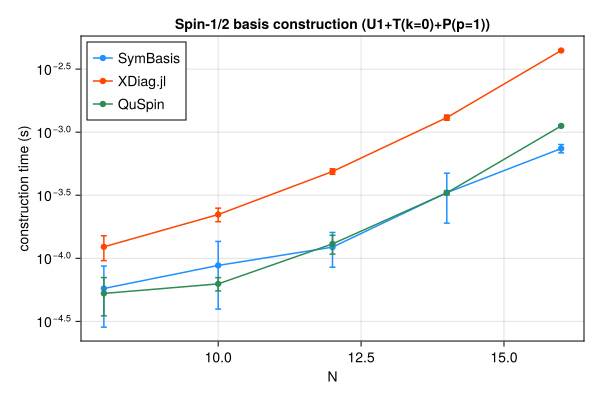
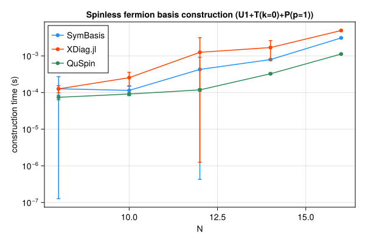
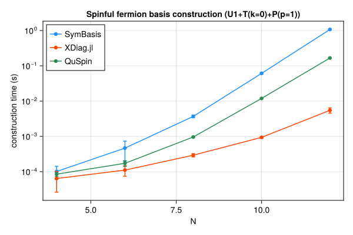
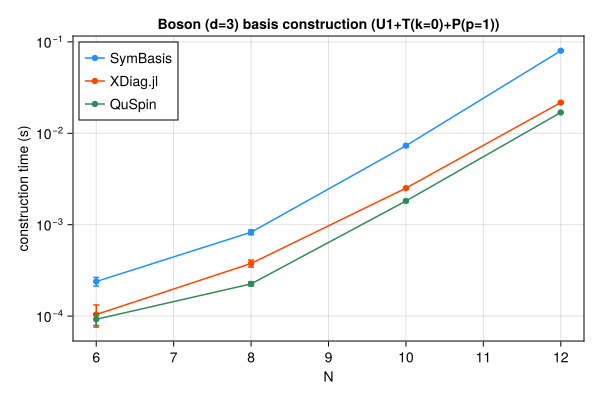

Symmetry-resolved basis construction and representative-state lookup speed, compared against XDiag.jl and QuSpin. SymBasis is benchmarked against its own dev checkout; XDiag.jl and QuSpin are whatever their latest released versions were at the time this page was generated. Regenerated automatically on every SymBasis release.
Threads are left at each library's own defaults (JULIA_NUM_THREADS=auto, OMP_NUM_THREADS unset) rather than pinned to 1 – these numbers reflect out-of-the-box performance, not a strictly single-threaded comparison.
Sweep: BENCH_SWEEP=quick
plot_construction("spin", "Spin-1/2")

| N | config | dim | SymBasis | XDiag | QuSpin | XDiag/SymBasis | QuSpin/SymBasis |
|---|
| 8 | U1 | 70 | 3.06e-05 ± 3.4e-05 s | 4.655e-06 ± 6.9e-06 s | 3.716e-05 ± 1.4e-05 s | 0.15x | 1.21x |
| 8 | U1+T(k=0) | 10 | 4.54e-05 ± 1.9e-05 s | 5.301e-05 ± 3.2e-05 s | 4.541e-05 ± 1e-05 s | 1.17x | 1.00x |
| 8 | U1+T(k=0)+P(p=1) | 8 | 5.764e-05 ± 2.9e-05 s | 0.0001233 ± 2.7e-05 s | 5.267e-05 ± 1.8e-05 s | 2.14x | 0.91x |
| 10 | U1 | 252 | 0.0001154 ± 0.00018 s | 4.033e-06 ± 6.2e-06 s | 3.814e-05 ± 1e-05 s | 0.03x | 0.33x |
| 10 | U1+T(k=0) | 26 | 7.824e-05 ± 6.2e-05 s | 9.8e-05 ± 2.6e-05 s | 5.468e-05 ± 9.4e-06 s | 1.25x | 0.70x |
| 10 | U1+T(k=0)+P(p=1) | 16 | 8.781e-05 ± 4.8e-05 s | 0.0002224 ± 2.7e-05 s | 6.269e-05 ± 7.5e-06 s | 2.53x | 0.71x |
| 12 | U1 | 924 | 5.521e-05 ± 3.7e-05 s | 4.671e-06 ± 6.6e-06 s | 4.281e-05 ± 7.2e-06 s | 0.08x | 0.78x |
| 12 | U1+T(k=0) | 80 | 8.476e-05 ± 3.5e-05 s | 0.000273 ± 3.1e-05 s | 8.886e-05 ± 8.7e-06 s | 3.22x | 1.05x |
| 12 | U1+T(k=0)+P(p=1) | 50 | 0.0001226 ± 3.8e-05 s | 0.0004878 ± 2.5e-05 s | 0.0001301 ± 2.2e-05 s | 3.98x | 1.06x |
| 14 | U1 | 3432 | 0.0002345 ± 0.00024 s | 5.92e-06 ± 7.3e-06 s | 6.839e-05 ± 1.7e-05 s | 0.03x | 0.29x |
| 14 | U1+T(k=0) | 246 | 0.0001796 ± 4.3e-05 s | 0.0008951 ± 3.5e-05 s | 0.0002254 ± 1.2e-05 s | 4.98x | 1.25x |
| 14 | U1+T(k=0)+P(p=1) | 133 | 0.0003315 ± 0.00014 s | 0.001305 ± 6.1e-05 s | 0.0003305 ± 1.3e-05 s | 3.94x | 1.00x |
| 16 | U1 | 12870 | 0.0004449 ± 0.00016 s | 7.559e-06 ± 9.7e-06 s | 0.0001511 ± 1e-05 s | 0.02x | 0.34x |
| 16 | U1+T(k=0) | 810 | 0.0004426 ± 2.8e-05 s | 0.003518 ± 5.9e-05 s | 0.0007322 ± 8.4e-06 s | 7.95x | 1.65x |
| 16 | U1+T(k=0)+P(p=1) | 440 | 0.0007418 ± 5.6e-05 s | 0.004443 ± 5.2e-05 s | 0.001121 ± 1.6e-05 s | 5.99x | 1.51x |
| N | config | nsamples | SymBasis | XDiag | QuSpin |
|---|
| 16 | U1+T(k=0)+P(p=1) | 10000 | 2.823e-07 ± 9.9e-10 s | N/A (no decoupled API) | 2.069e-07 ± 9e-08 s |
plot_construction("fermion", "Spinless fermion")

| N | config | dim | SymBasis | XDiag | QuSpin | XDiag/SymBasis | QuSpin/SymBasis |
|---|
| 8 | U1 | 70 | 5.442e-05 ± 6.6e-05 s | 4.336e-06 ± 6.4e-06 s | 4.921e-05 ± 1.2e-05 s | 0.08x | 0.90x |
| 8 | U1+T(k=0) | 9 | 0.0001237 ± 0.0002 s | 5.293e-05 ± 2.7e-05 s | 6.231e-05 ± 9.2e-06 s | 0.43x | 0.50x |
| 8 | U1+T(k=0)+P(p=1) | 6 | 0.0001266 ± 0.00014 s | 0.0001259 ± 2.8e-05 s | 7.415e-05 ± 1.1e-05 s | 0.99x | 0.59x |
| 10 | U1 | 252 | 4.302e-05 ± 3.4e-05 s | 5.325e-06 ± 7.4e-06 s | 5.243e-05 ± 9.4e-06 s | 0.12x | 1.22x |
| 10 | U1+T(k=0) | 26 | 7.415e-05 ± 3.4e-05 s | 0.0001054 ± 2.6e-05 s | 7.934e-05 ± 1.1e-05 s | 1.42x | 1.07x |
| 10 | U1+T(k=0)+P(p=1) | 16 | 0.0001145 ± 3.3e-05 s | 0.0002547 ± 0.0001 s | 9.122e-05 ± 7.7e-06 s | 2.22x | 0.80x |
| 12 | U1 | 924 | 0.0003566 ± 0.00022 s | 5.036e-06 ± 6.4e-06 s | 6.484e-05 ± 1.2e-05 s | 0.01x | 0.18x |
| 12 | U1+T(k=0) | 76 | 0.0001451 ± 4.5e-05 s | 0.0002974 ± 3.2e-05 s | 0.000115 ± 2.9e-05 s | 2.05x | 0.79x |
| 12 | U1+T(k=0)+P(p=1) | 33 | 0.0004276 ± 0.00049 s | 0.001253 ± 0.0019 s | 0.0001182 ± 9.8e-06 s | 2.93x | 0.28x |
| 14 | U1 | 3432 | 0.0002257 ± 0.00018 s | 5.564e-06 ± 6.7e-06 s | 6.654e-05 ± 1.4e-05 s | 0.02x | 0.29x |
| 14 | U1+T(k=0) | 246 | 0.0004368 ± 5.4e-05 s | 0.001028 ± 3.3e-05 s | 0.0002217 ± 9.5e-06 s | 2.35x | 0.51x |
| 14 | U1+T(k=0)+P(p=1) | 113 | 0.0007947 ± 4.2e-05 s | 0.00169 ± 0.00092 s | 0.0003256 ± 1.5e-05 s | 2.13x | 0.41x |
| 16 | U1 | 12870 | 0.001036 ± 0.00056 s | 9.182e-06 ± 9.4e-06 s | 0.0001497 ± 1e-05 s | 0.01x | 0.14x |
| 16 | U1+T(k=0) | 809 | 0.001444 ± 0.00044 s | 0.004074 ± 4.2e-05 s | 0.0007327 ± 1.1e-05 s | 2.82x | 0.51x |
| 16 | U1+T(k=0)+P(p=1) | 422 | 0.003094 ± 7.9e-05 s | 0.004928 ± 6.8e-05 s | 0.001125 ± 2e-05 s | 1.59x | 0.36x |
| N | config | nsamples | SymBasis | XDiag | QuSpin |
|---|
| 16 | U1+T(k=0)+P(p=1) | 10000 | 1.97e-06 ± 4.2e-09 s | N/A (no decoupled API) | 1.867e-06 ± 6.7e-09 s |
plot_construction("spinful_fermion", "Spinful fermion")

| N | config | dim | SymBasis | XDiag | QuSpin | XDiag/SymBasis | QuSpin/SymBasis |
|---|
| 4 | U1 | 36 | 4.125e-05 ± 3.3e-05 s | 6.124e-06 ± 9.3e-06 s | 6.418e-05 ± 2.7e-05 s | 0.15x | 1.56x |
| 4 | U1+T(k=0) | 10 | 6.708e-05 ± 2.6e-05 s | 0.0001002 ± 0.00024 s | 7.37e-05 ± 1.1e-05 s | 1.49x | 1.10x |
| 4 | U1+T(k=0)+P(p=1) | 6 | 0.0001011 ± 4.1e-05 s | 6.391e-05 ± 3.8e-05 s | 8.483e-05 ± 1.1e-05 s | 0.63x | 0.84x |
| 6 | U1 | 400 | 0.0006803 ± 0.00059 s | 5.284e-06 ± 9.1e-06 s | 7.499e-05 ± 1.2e-05 s | 0.01x | 0.11x |
| 6 | U1+T(k=0) | 68 | 0.0003711 ± 0.00039 s | 5.546e-05 ± 3.9e-05 s | 0.0001296 ± 1.3e-05 s | 0.15x | 0.35x |
| 6 | U1+T(k=0)+P(p=1) | 38 | 0.0004648 ± 0.00027 s | 0.0001105 ± 3.7e-05 s | 0.0001724 ± 3.1e-05 s | 0.24x | 0.37x |
| 8 | U1 | 4900 | 0.0007419 ± 0.00019 s | 5.516e-06 ± 8.9e-06 s | 0.0001252 ± 1.1e-05 s | 0.01x | 0.17x |
| 8 | U1+T(k=0) | 618 | 0.002125 ± 0.00027 s | 0.0001255 ± 3.3e-05 s | 0.0005261 ± 1.4e-05 s | 0.06x | 0.25x |
| 8 | U1+T(k=0)+P(p=1) | 318 | 0.003686 ± 0.00032 s | 0.0002926 ± 3.1e-05 s | 0.0009593 ± 1.4e-05 s | 0.08x | 0.26x |
| 10 | U1 | 63504 | 0.008367 ± 0.00061 s | 6.029e-06 ± 9.2e-06 s | 0.001069 ± 5.1e-05 s | 0.00x | 0.13x |
| 10 | U1+T(k=0) | 6352 | 0.03559 ± 0.0011 s | 0.0004147 ± 4.2e-05 s | 0.00645 ± 2.5e-05 s | 0.01x | 0.18x |
| 10 | U1+T(k=0)+P(p=1) | 3212 | 0.06111 ± 0.0026 s | 0.0009376 ± 4.3e-05 s | 0.01192 ± 2.4e-05 s | 0.02x | 0.20x |
| 12 | U1 | 853776 | 0.1303 ± 0.019 s | 6.826e-06 ± 1e-05 s | 0.01559 ± 0.00038 s | 0.00x | 0.12x |
| 12 | U1+T(k=0) | 71188 | 0.6321 ± 0.021 s | 0.002186 ± 5.5e-05 s | 0.09067 ± 0.0033 s | 0.00x | 0.14x |
| 12 | U1+T(k=0)+P(p=1) | 35694 | 1.073 ± 0.012 s | 0.005479 ± 0.00092 s | 0.1667 ± 0.0016 s | 0.01x | 0.16x |
| N | config | nsamples | SymBasis | XDiag | QuSpin |
|---|
| 12 | U1+T(k=0)+P(p=1) | 10000 | 1.327e-05 ± 3.6e-08 s | N/A (no decoupled API) | 2.233e-06 ± 1e-08 s |
plot_construction("boson", "Boson (d=3)")

| N | config | dim | SymBasis | XDiag | QuSpin | XDiag/SymBasis | QuSpin/SymBasis |
|---|
| 6 | U1 | 141 | 0.0004875 ± 0.00085 s | 4.637e-06 ± 6.1e-06 s | 6.375e-05 ± 2.8e-05 s | 0.01x | 0.13x |
| 6 | U1+T(k=0) | 26 | 0.0003079 ± 0.00031 s | 5.981e-05 ± 2.8e-05 s | 7.967e-05 ± 1.2e-05 s | 0.19x | 0.26x |
| 6 | U1+T(k=0)+P(p=1) | 18 | 0.0002392 ± 2.6e-05 s | 0.0001041 ± 2.8e-05 s | 9.241e-05 ± 1.4e-05 s | 0.44x | 0.39x |
| 8 | U1 | 1107 | 0.0006336 ± 0.00079 s | 6.235e-06 ± 6.5e-06 s | 9.889e-05 ± 1.1e-05 s | 0.01x | 0.16x |
| 8 | U1+T(k=0) | 142 | 0.0006467 ± 0.0003 s | 0.0002485 ± 2.5e-05 s | 0.0002328 ± 1.2e-05 s | 0.38x | 0.36x |
| 8 | U1+T(k=0)+P(p=1) | 84 | 0.0008278 ± 5.1e-05 s | 0.000377 ± 3.4e-05 s | 0.0002252 ± 1.2e-05 s | 0.46x | 0.27x |
| 10 | U1 | 8953 | 0.001495 ± 0.00072 s | 1.11e-05 ± 8.3e-06 s | 0.0002882 ± 1.3e-05 s | 0.01x | 0.19x |
| 10 | U1+T(k=0) | 902 | 0.004498 ± 0.00029 s | 0.001956 ± 4.5e-05 s | 0.001486 ± 1e-05 s | 0.43x | 0.33x |
| 10 | U1+T(k=0)+P(p=1) | 486 | 0.007329 ± 0.00024 s | 0.002514 ± 2.7e-05 s | 0.001818 ± 4.6e-05 s | 0.34x | 0.25x |
| 12 | U1 | 73789 | 0.0115 ± 0.00061 s | 2.939e-05 ± 1.1e-05 s | 0.002082 ± 1.9e-05 s | 0.00x | 0.18x |
| 12 | U1+T(k=0) | 6166 | 0.05032 ± 0.0011 s | 0.01849 ± 7.8e-05 s | 0.01427 ± 1.9e-05 s | 0.37x | 0.28x |
| 12 | U1+T(k=0)+P(p=1) | 3179 | 0.08004 ± 0.0018 s | 0.02171 ± 0.0003 s | 0.01691 ± 4.7e-05 s | 0.27x | 0.21x |
| N | config | nsamples | SymBasis | XDiag | QuSpin |
|---|
| 12 | U1+T(k=0)+P(p=1) | 10000 | 6.814e-06 ± 7.5e-09 s | N/A (no decoupled API) | 3.168e-07 ± 4.9e-10 s |